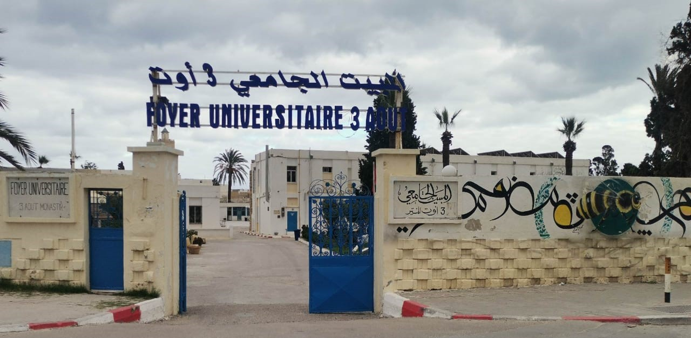
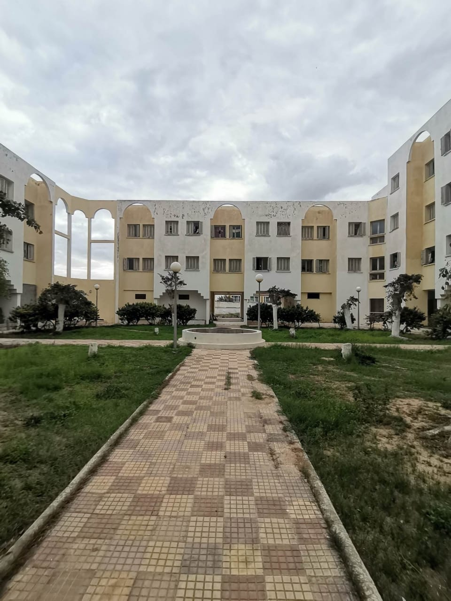
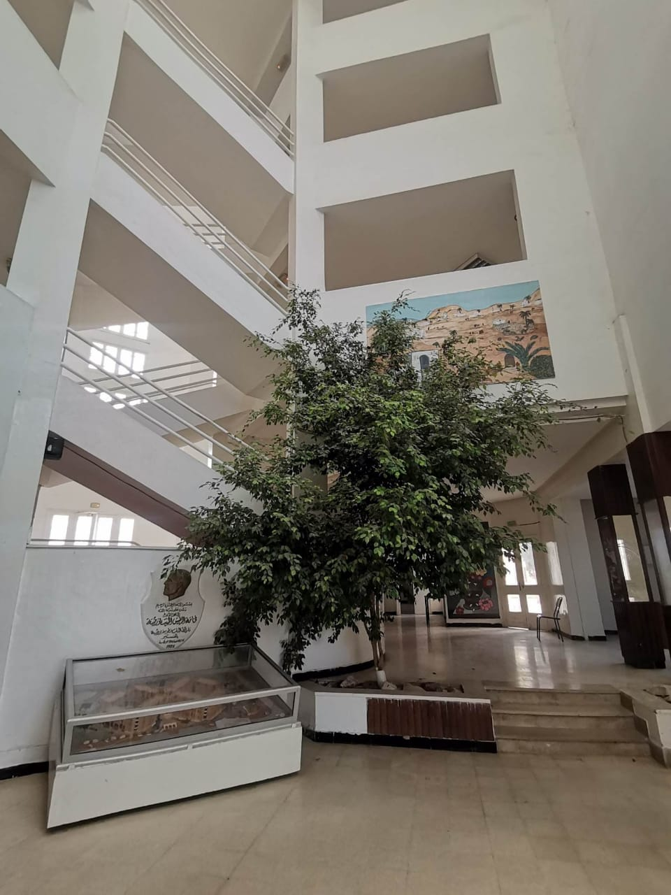
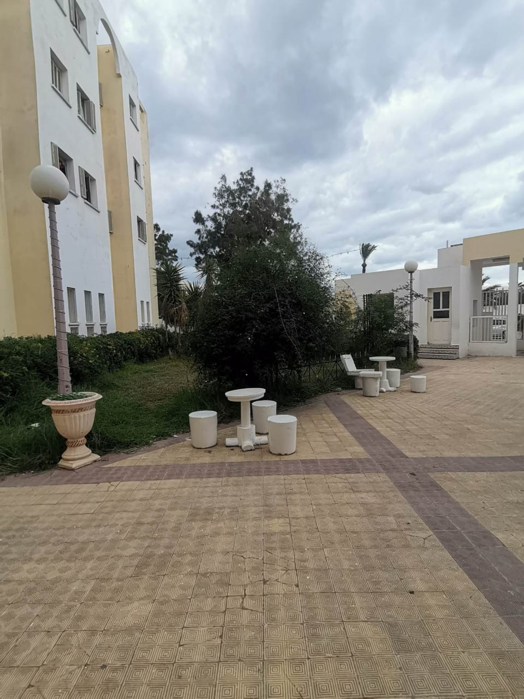
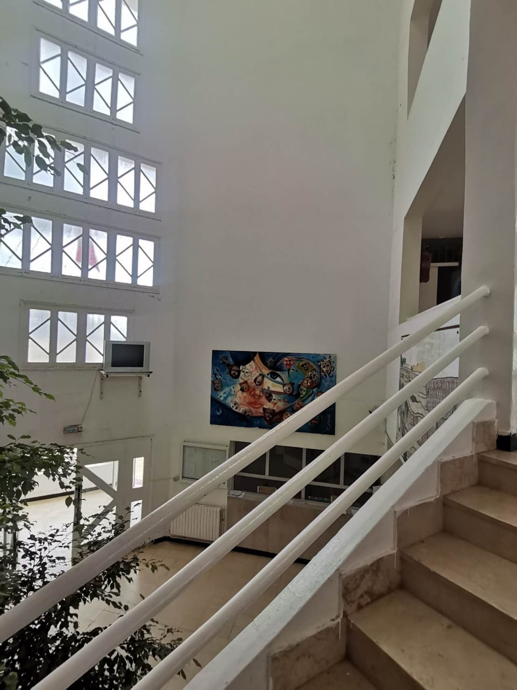
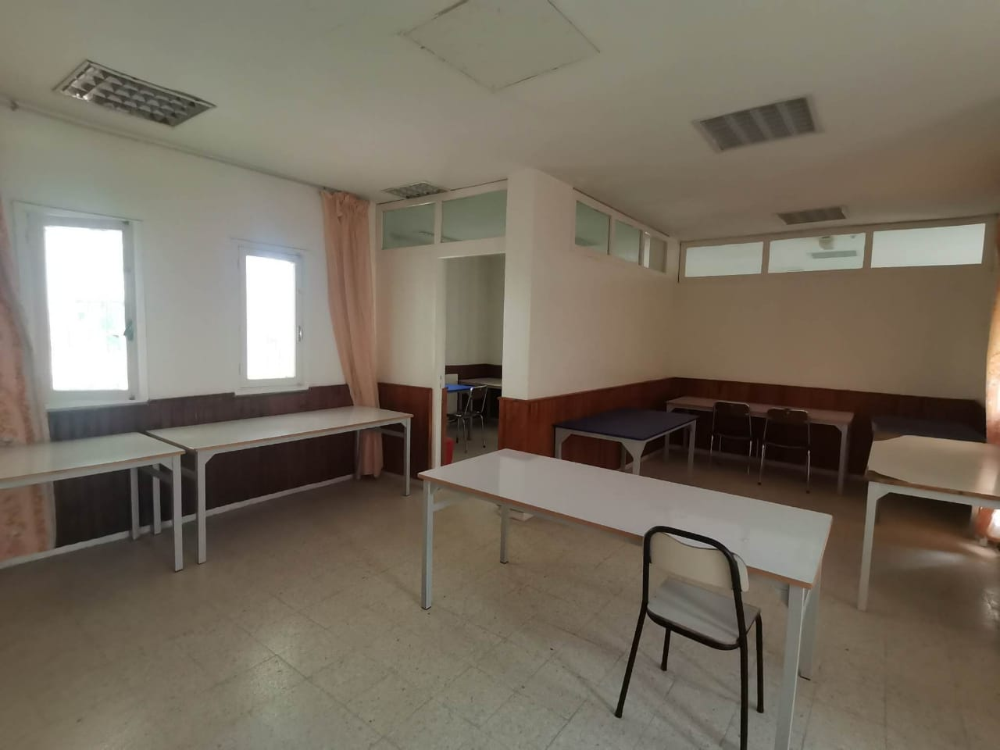
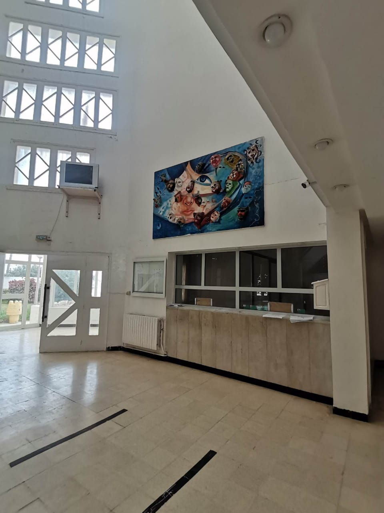

À proximité de l'ISIMM, il existe deux foyers universitaires distincts, l'un dédié aux étudiantes et l'autre réservé aux étudiants masculins.
Ces foyers sont accompagnés d'un restaurant universitaire situé à seulement 5 minutes de marche de l'ISIMM.
Le Foyer 3 Août, situé en face du Foyer Fattouma Bourguiba, est une résidence universitaire dédiée exclusivement aux étudiants masculins. Cette structure offre un environnement sécurisé et propose des installations bien conçues pour répondre aux besoins des résidents.
Organisé sur plusieurs étages, le foyer comprend des blocs qui regroupent des chambres, des cuisines communes et des salles de bains. Chaque bloc est équipé pour assurer le confort et la commodité des étudiants. Les chambres sont généralement conçues pour deux personnes, favorisant ainsi un certain degré d'intimité.
En termes d'emplacement, le Foyer 3 Août se trouve à une courte distance à pied de l'ISIMM, offrant ainsi une grande commodité aux résidents. De plus, la proximité avec des services tels que des pharmacies, des supermarchés et des cafés facilite la vie quotidienne des étudiants masculins résidant dans cet établissement.

Le Foyer Fattouma Bourguiba est une résidence universitaire sécurisée exclusivement réservée aux étudiantes. Ce foyer est organisé en trois étapes, chacune comprenant des blocs. Chaque bloc est équipé de chambres, d'une cuisine et d'une salle de bain, comprenant généralement quatre toilettes. Les chambres sont disposées en paires pour assurer l'intimité des étudiantes. Chaque chambre est équipée d'une douche individuelle, d'un lit, d'une table d'étude et d'un miroir pour les vêtements.



En ce qui concerne l'emplacement, le foyer est très proche de l'ISIMM, à seulement 5 minutes à pied. De plus, il est idéalement situé à proximité de toutes les commodités dont les étudiantes pourraient avoir besoin, telles que les pharmacies, les supermarchés, les cafés, et dispose également d'un vaste jardin.



Le restaurant universitaire affilié au Foyer Fattouma Bourguiba, situé au sein du même campus, joue un rôle essentiel en offrant des repas équilibrés et adaptés aux besoins nutritionnels des étudiantes et étudiants résidant dans le foyer.
Ce restaurant propose une variété de plats équilibrés, conçus pour répondre aux exigences nutritionnelles spécifiques des jeunes adultes engagés dans des études universitaires. Les menus sont généralement diversifiés pour offrir des options adaptées à différents goûts et préférences alimentaires.
La proximité du restaurant universitaire facilite l'accès des résidentes et résidents au service de restauration, contribuant ainsi à simplifier leur quotidien et à répondre à leurs besoins alimentaires. En offrant des repas sains et variés, le restaurant contribue à créer un environnement propice à la concentration académique et au bien-être global des étudiantes et étudiants du Foyer Fattouma Bourguiba.